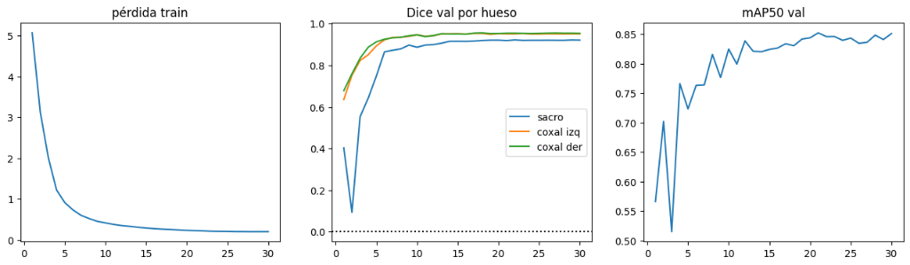
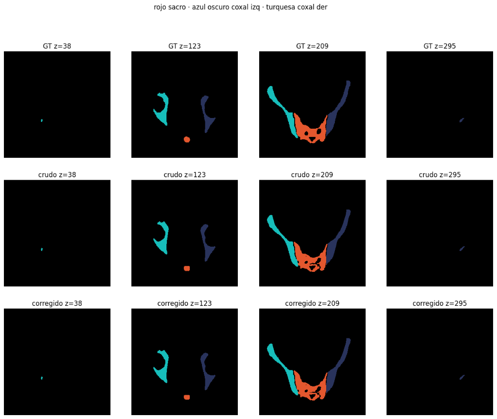
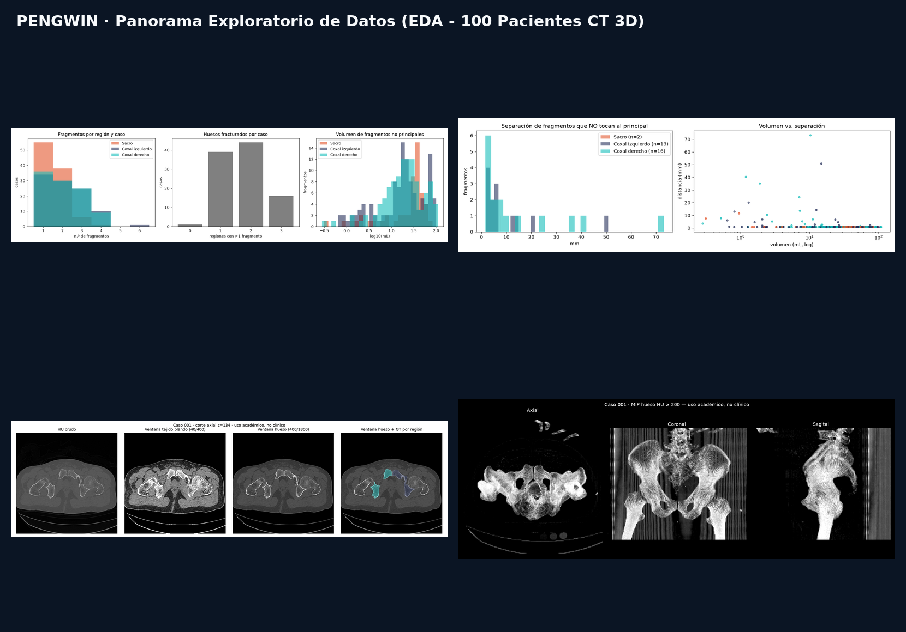
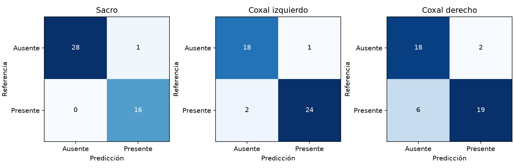
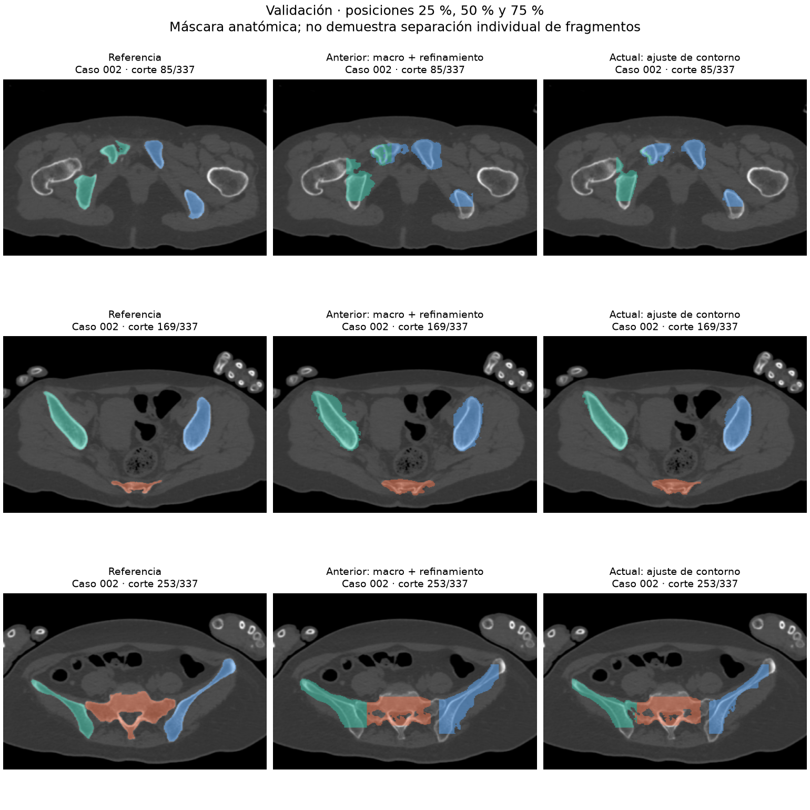
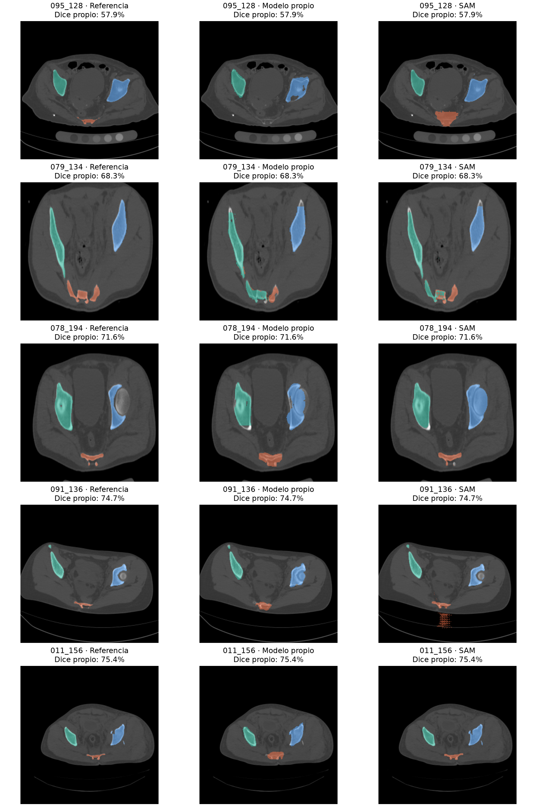

Visualizador 1 (MIP 3D): Proyección rotatoria de máxima intensidad del hueso por umbral de 200 HU en orientación canónica LPS. Usa los botones inferiores o el slider para rotar 360°.
Visualizador 3 (Malla 3D Superpuesta + Distancias): Fragmentos óseos reconstruidos en coordenadas físicas reales (mm) con Marching Cubes. Arrastra con el mouse o con el dedo en tu celular para rotar en 3D y usa la rueda/pellizco para hacer zoom.
Resultados del Entrenamiento GPU (30 Épocas) y Evaluación Volumétrica
1. Curvas de Entrenamiento GPU 30 Épocas (Mejor Época 21)

2. Comparación Axial en GPU: GT vs Crudo vs Corregido (Caso 002)

3. Panorama Exploratorio EDA (100 Pacientes CT 3D)

4. Matrices de Confusión y Clasificación Anatómica

5. Comparación Visual Multi-Paciente en Validación

6. Auditoría Crítica de los 5 Cortes Más Difíciles

Visor Visual de Model Cards, Reporte de Anomalías e Informe Final
Selecciona cualquier documento a la izquierda para visualizarlo con formato de tablas, tarjetas y encabezados listos para presentar:
Resumen Técnico del Paciente Seleccionado
Las distancias inter-fragmentarias se calculan con la Transformada de Distancia Euclidiana (EDT) anisotrópica en milímetros reales usando el espaciado físico de SimpleITK.